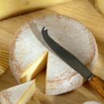
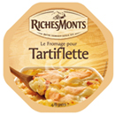
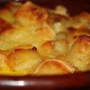

Bienvenue sur Tartiland
Vous êtes sur Tartiland, le meilleur site de tartiflette de tout les temps. Ici vous trouverez la meilleur recette de tartiflette ainsi que le travail du créateur du site.
Description du createur:
Je m'appelle Lucas Vasseur, j'ai 17 ans et je suis étudiant au lycée de l'hautil dans lequel j'ai pris l'option ISN. Sur ce site vous pourrez trouver mes programmes Javascript, un lexique
contenant des definitions de certains mots dans le domaine de l'informatique ainsi qu'un résumé de certaines commandes Javascript. Mais vous pourrez bien evidemment aussi trouver des informations
sur la meilleure tartiflette de tous les temps !
-
Du bon fromage
Le meilleur fromage se trouve sur ce site, bien fondant et succulant.
-
Achetez le bon RichesMonts
Le meilleur fromage a tartiflette est bien entendu le RichesMonts, fondant et doux a la fois.
-
De la tartiflette bien chaude et prête !
Commandez donc ici votre tartiflette toute prête livrée a domicile provenant directement de haute-savoie.